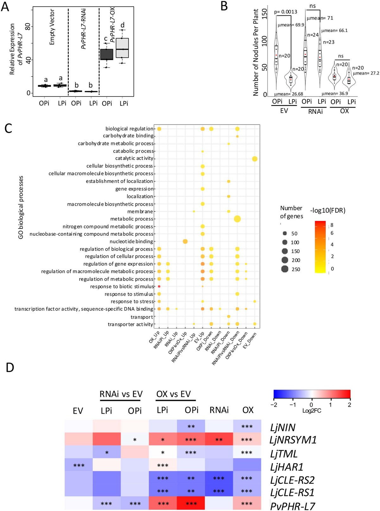

Engineering how plants make their own fertilizer.
Postdoctoral Research Associate
Sainsbury Laboratory, University of Cambridge
Key discoveries at the intersection of nutrient signalling and symbiosis
First Discovery
Demonstrated that PHR1 transcription factor directly binds the NIN promoter — revealing that phosphate availability controls whether a legume commits to forming nitrogen-fixing nodules. This discovery opens an entirely new regulatory axis in symbiosis research.

Ongoing at Cambridge
Investigating legume nodule symbiosis in Dr. Sebastian Schornack's group at the Sainsbury Laboratory. Studying conserved negative regulators of nitrogen fixation in crop legumes — cowpea and soybean — and using CRISPR-Cas9 knockouts and promoter fine-tuning to improve nitrogen fixation and field performance.
ENSA →Integrative Vision
Building a comprehensive framework of how nitrogen, phosphorus, potassium, and iron signals converge to regulate nodulation decisions. This integrative approach spans multiple legume species central to food security in South Asia and sub-Saharan Africa.
Perspective · Nutrient–symbiosis integration · 2026Landmark discoveries linking phosphate sensing to symbiotic commitment
Phosphate is not just a nutrient — it is a gatekeeper that determines whether legumes commit to nitrogen-fixing symbiosis
Published in
First and corresponding author publications shaping the field
Beyond Nitrogen: Phosphate Controls Root Nodule Symbiosis Commitment
Perspective article defining the phosphate-nodulation paradigm
Phosphate deficiency reduces nodule formation through a phosphate starvation response-like protein in Phaseolus vulgaris
First evidence of PHR1 directly binding the NIN promoter
Harnessing the potential of symbiotic associations of plants in nutrient-deficient soil for sustainable agriculture
Comprehensive review on symbiotic strategies for nutrient-poor soils
Role of Nod factor receptors and its allies involved in nitrogen fixation
Authoritative review on Nod factor receptor signalling
Discovering the genetic modules controlling root nodule symbiosis under abiotic stresses: salinity as a case study
Framework for understanding symbiosis under environmental stress
Genome-wide identification, expression, and characterization of CaLysM-RLKs in chickpea root nodule symbiosis
Identified 17 LysM-RLKs governing Nod factor perception in chickpea
+ 7 editorials at MPMI, 8 book chapters, and additional co-authored publications
View All on Google Scholar →Background and research trajectory across India, Mexico, and the UK
I am a plant molecular biologist driven by a single question: how do legumes decide when and where to form nitrogen-fixing root nodules? This decision integrates nutrient signals, developmental cues, and microbial dialogues — and understanding it holds the key to reducing agriculture's dependence on synthetic fertilizers.
My research journey has taken me from studying salt-stressed millets in the Thar Desert (India), to dissecting Nod factor signalling in chickpea (New Delhi), to discovering how phosphate controls nodulation commitment in common bean (Mexico), and now to CRISPR-engineering enhanced nitrogen fixation in cowpea and soybean at Cambridge. Each step has built a unique, integrative perspective on legume symbiosis.
I am an Assistant Feature Editor at Molecular Plant-Microbe Interactions (MPMI) and co-organized the satellite meeting on mentoring at IS-MPMI Congress 2025 in Cologne, reflecting my commitment to both science communication and community building.
Postdoctoral Research Associate with Prof. Sebastian Schornack (ENSA) — CRISPR-engineering cowpea and soybean for enhanced nitrogen fixation. Functional genomics dissection of nodule development.
DGAPA Postdoctoral Fellow with Prof. Oswaldo Valdés-López — First to demonstrate that PHR1 directly binds the NIN promoter, linking phosphate availability to the master switch of nodulation.
Ph.D. in Plant Biology with Prof. Praveen K. Verma — Discovered 17 LysM receptor-like kinases for Nod factor perception in chickpea. Identified MAP kinases as critical signal transducers from membrane to nucleus.
Research Fellow with Prof. Shweta Jha — Stress proteomics in pearl millet. Identified salt-responsive proteins and physiological markers for stress tolerance breeding.
M.Sc. in Biochemistry — Foundational training in protein biochemistry, enzymology, and molecular biology, sparking a long-term interest in how nutrients and signalling molecules shape plant physiology.
Engineering nutrient-smart symbiosis for sustainable agriculture
My independent research program will decode the cell-type specific nutrient signalling logic of nodulation and rewire it using genome engineering to create climate-resilient, low-fertilizer legume varieties for global agriculture.
Mapping how nitrogen, phosphorus, potassium, and iron signals converge on nodulation decisions, using a combination of transcriptomic, epigenomic, and proteomic approaches across multiple legume species.
Integrating proteomics with transcriptomics to identify and functionally characterize nutrient transporters in nodules. Creating CRISPR knockout and overexpression lines with synthetic nutrient-responsive promoters.
Assembling synthetic transcriptional circuits combining elements from nitrate, phosphate, and potassium signalling pathways. Multiplex CRISPR editing to reprogram multiple regulatory pathways simultaneously.
Evaluating engineered varieties in nutrient-poor and saline soils. Participatory field trials with smallholder farmers in South Asia and sub-Saharan Africa. Technology transfer through agricultural extension partnerships.
I am always open to scientific discussions, collaborations, and new ideas at the intersection of nutrient signalling, symbiosis, and crop engineering. Whether you are working on legume biology, genome editing, or sustainable agriculture — let's connect and explore synergies.
Start a ConversationCultivating the next generation of plant scientists
Undergraduate supervisor for the Plant and Microbial Sciences (IBPMS) course, covering topics including Feeding the World, Pathological and Beneficial Plant-Microbe Interactions. Conducted revision sessions and guided students in essay writing, critical analysis, and interpretation of research data.
Mentored multiple Master's research students and summer interns at Cambridge on root nodule development and molecular regulation of symbiosis. Provided hands-on training in molecular biology, confocal imaging, CRISPR techniques, and data analysis.
Building community in plant-microbe interactions research
Molecular Plant-Microbe Interactions (MPMI), 2024–Present. Contributing science communication through accessible summaries, author interviews, and commentaries.
Co-organizer & Chair of satellite meeting "Building Careers in MPMI through Effective Mentoring" at IS-MPMI Congress 2025, Cologne. Poster judge for Best Poster Award. Mini-symposium co-organizer at Sainsbury Laboratory.
Reviewer for The Plant Cell, New Phytologist, The Plant Journal, Journal of Experimental Botany, Frontiers in Plant Science, BMC Plant Biology, and Scientific Reports.
DGAPA Postdoctoral Fellowship (UNAM, Mexico). CSIR-UGC Senior & Junior Research Fellowships (India). GATE qualified. Swachhta Saarthi Fellowship (Govt. of India).
Open to PI opportunities, collaborations, and seminar invitations worldwide
Sainsbury Laboratory
University of Cambridge
47 Bateman Street
Cambridge CB2 1LR, UK